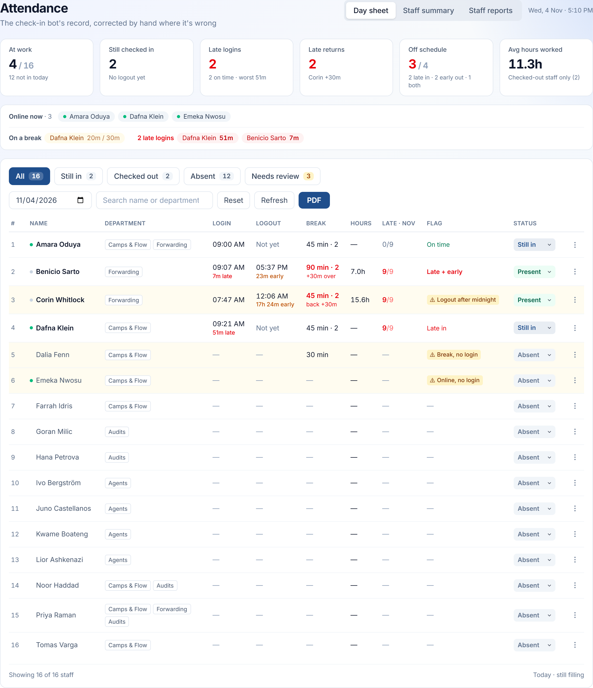
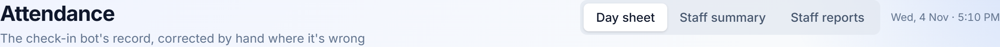
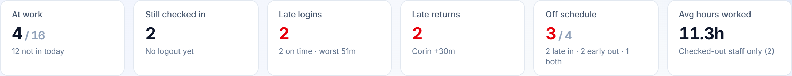
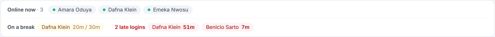
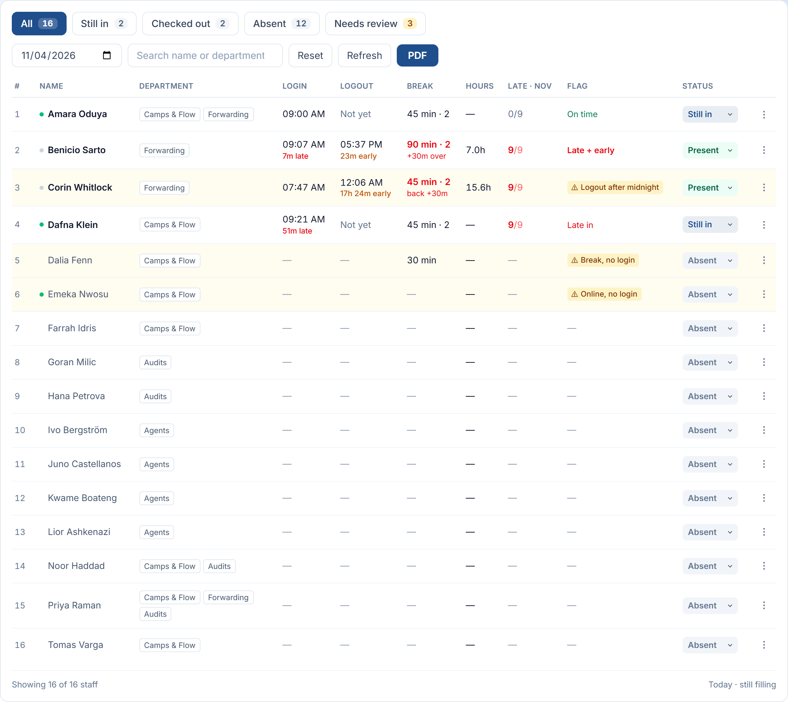
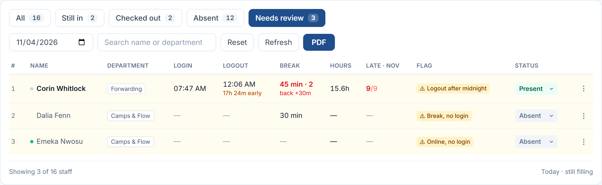
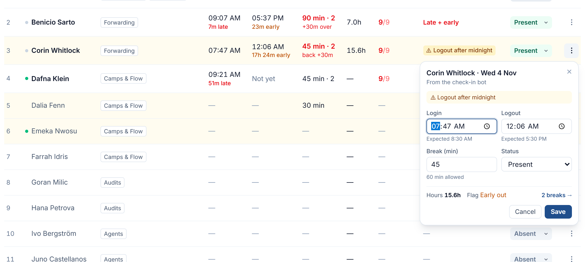
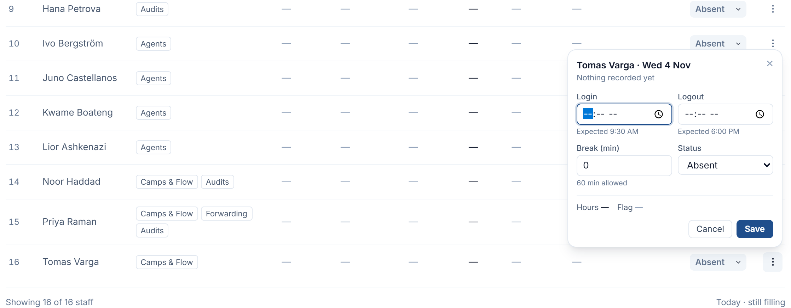
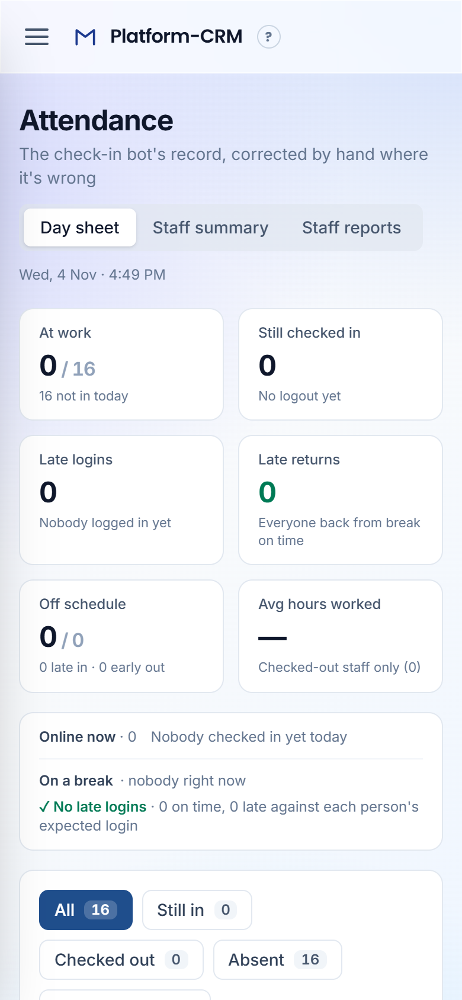

The rules behind the Attendance day sheet, written down so the page stays one coherent thing as it changes. They are taken from the design mock and applied in the build.

The designer's mock of the Attendance page was studied row by row and column by column. Every decision it repeats is written here as a rule: what it says, why it holds, and how the page applies it.
It is the companion to Dashboard Design Principles. The foundations there (Inter, the navy accent, flat white panels, sentence-case words, units beside numbers) apply here unchanged and are not repeated. This document covers what is particular to attendance: a table people read many times a day and correct by hand.
The screenshots use the local sample data. That data has nobody at work “today”, so the screenshot tool serves 10 Sep 2026 as today inside the headless browser only, with a few rows altered to show each state: still in, a logout after midnight, a break with no login, and someone online with no login. Nothing was written to the database. Section 8 lists where the build departs from the mock.
The check-in bot records who logs in, takes breaks and logs out. It is usually right and sometimes wrong. The Day sheet answers three questions, in this order: who is at work, who isn't, and which records can't be trusted yet? It is also where a wrong record gets fixed.
Rows read as plain text: clock times, minutes, hours. Editing is one deliberate step away, in a small popover from the ⋮ button. The status pill is the only control in the row.
Why: the sheet is read dozens of times a day and corrected a few times a week. A grid of time inputs made every glance look like a form, and made a stray click into a stray edit. Applied: ⋮ opens a compact popover beside the row with login, logout, break and status, a live preview of hours and flag, the bot's breaks, and “Put back bot's record”. It never covers the sheet.
When the bot and the clock times disagree, the row is tinted amber and the Flag column says what is wrong, in words: “Online, no login”, “Break, no login”, “Logout, no login”, “Logout after midnight”.
Why: these are the records most likely to be wrong, and the ones that throw off every count above the table. Applied: the “Needs review” tab gathers them, and its count is amber when it isn't zero. A review flag takes the Flag column's place ahead of the punctuality verdict, and the correction popover repeats it at the top.
Somebody who hasn't logged in reads grey: a regular-weight name, dashes, a grey “Absent” pill. Somebody who worked reads dark: a bold name and real times.
Why: early in the day most of the roster is absent. If absence were red, the page would be mostly red and nothing would stand out. Applied: the eye finds the people who are in by weight alone, and red stays free for what needs chasing.
Red means a fault that counts against a person: a late login, a break over the allowance, a late return from break, late logins this month. Amber means something to look at that isn't a fault: an early logout, a review flag, someone on a break right now.
Applied: “7m late” under a login is red, and “23m early” under a logout is amber. In the Flag column, “Late in” is red, “Early out” amber and “Late + early” bold red. Green appears only for on time and, once anyone has logged in, a zero that is genuinely good news.
Online dots, online chips and the on-break list describe right now, so they only appear when today is on screen.
Why: a green “online” dot on last Tuesday's row would be a lie. Applied: on a past day the panel says “Live status shows for today only”, and the name dot is grey for anyone who worked.
The six cards, the status panel, the tab counts and the table rows all come from one list of days, built in one function (buildDayViews).
Why: a card that says “3 late” above a table showing two late rows destroys trust in both. Applied: the late-login chips are the late rows, worst first. “Needs review 3” is exactly the amber rows.
An empty state is a short sentence, not a blank: “Not yet”, “· nobody right now”, “✓ No late logins · 18 on time”, “Everyone back from break on time”, “none yet, nobody has logged in”.
Applied: a logout cell for someone still in says “Not yet”, not a dash. A dash is kept for “nothing to show”, such as an absent person's hours.
A person on leave (on the Leaves sheet, or with the status set to Leave) is never counted late, early, absent or in need of review.
Applied: their row reads “Leave” in violet, their times are not judged, and they are left out of “not in today” and counted separately (“· 1 on leave”).
A count is shown against what it is out of: “18 / 42” at work, “1 / 18” off schedule, “0/3” late logins this month, “Checked-out staff only (1)”.
Why: “1 off schedule” means nothing until you know whether 3 or 30 were judged. The denominator is lighter and smaller, so the eye still lands on the count.
The Late · Nov column is the one figure in the row that isn't about the day on screen: late logins so far this month, out of the logins recorded.
Why: one late morning is rarely the point; the sixth one is. Reading that off a day sheet would otherwise mean opening thirty of them. Applied: “0/3” in grey, red once any are late, with the minutes lost and the worst one in the tooltip.
The Dashboard's tokens apply. These are the meanings particular to attendance:
| Colour | On this page it means |
|---|---|
| Navy | Selected (active tab, filter, primary button) and “Still in” (navy text on a navy tint). |
| Online green dot | Checked in right now, today only. |
| Green text | On time; a good zero (no late logins, no late returns) once anyone has logged in; the “Present” pill. |
| Red | Counted against a person: late login, break over the allowance, late return, late logins this month, late + early. |
| Amber | To check: early logout, review flags and the amber row tint, the “Needs review” count, on a break now. |
| Violet | Leave: an agreed day off, never a fault. |
| Grey | Absent, holiday, dashes, a worked-but-offline dot. The page's resting state. |
The stored statuses keep their vocabulary and are written in sentence case. Each is a tinted pill with a chevron. It is a real select, so changing it saves the status for that day. Where nothing is stored, the pill shows what the clock times imply (a login and no logout reads “Still in”), and its tooltip says so.
| Status | Pill | Meaning |
|---|---|---|
| Still in | Still in | Logged in, no logout yet. |
| Present | Present | A day worked. |
| Half day | Half day | A partial day. |
| Leave | Leave | An agreed day off. |
| Holiday / Absent | Absent | No day worked. Quiet by design (principle 2.3). |




| Column | Reads |
|---|---|
| # | Row number, grey. |
| Name | Dot (green online, grey worked, none absent) · name, bold if they worked · performer badge. |
| Department | Hairline chips, wrapping in place. |
| Login / Logout | “05:40 AM”; “Not yet” while still in; “7m late” in red or “23m early” in amber beneath it. |
| Break | “30 min · 1” (minutes · breaks). Red with “+30m over” or “back +30m” when it ran over. Click to see each break. |
| Hours | Net of breaks, one decimal. |
| Late · Nov | Late logins this month out of logins: “0/3”, red when any were late. |
| Flag | Review flag (amber chip) first, otherwise On time / Late in / Early out / Late + early. |
| Status · ⋮ | The status pill; ⋮ opens the day for correction. |

The tab narrows the sheet to the rows that disagree with themselves. In order of priority:
⋮ opens a small popover hanging from the button. It isn't a full-screen window: the row being corrected and the table around it stay in view.


prefers-reduced-motion.| What | Format | Example |
|---|---|---|
| Clock time | Two-digit hour, 12-hour clock | 05:40 AM · 12:06 AM |
| Off schedule | Gap, then “late” or “early” | 7m late · 6h 54m early |
| Break | Minutes · number of breaks | 30 min · 1 |
| Hours | One decimal, “h” | 15.8h |
| Count with base | Count / base, base lighter | 18 / 42 · 0/3 |
| Header clock | Weekday, day month · time | Wed, 4 Nov · 4:12 PM |
| Past day | Weekday, month day | Thu, Sep 10 · past day |
| Nothing to show | Em dash | — |
| State | Treatment |
|---|---|
| Today, filling in | Online dots and chips, on-break chips, “Not yet” in logout cells, “Today · still filling” in the footer. |
| Nobody in yet | Zeros stay neutral, not green; the panel says “none yet, nobody has logged in” and the Late returns card “No breaks yet”. |
| Past day | No live state: the panel says “Live status shows for today only” and worked rows get a grey dot. |
| Loading / error | “Loading…” or the error in red, inside the table card; the cards above stay. |
| Empty filter | “Nobody matches — clear the search or pick another tab.” |
| Refreshing | The Refresh button reads “Refreshing…” and is disabled until the day is re-read. |
| On leave | A violet “Leave” pill; never judged, counted or flagged (principle 2.8). |
role="tab" with aria-selected. The date and search fields carry labels.
| Mock | Build | Why |
|---|---|---|
| Status pill “Checked out” | The stored status, in sentence case (“Present”); the “Checked out” tab counts anyone with a logout | Statuses are stored values that staff, the Staff Summary and the exports already use. Renaming “present” on one screen would split the vocabulary. |
| ⋮ with no behaviour shown | ⋮ opens a compact correction popover beside the row (section 4.6) | The old sheet edited every cell inline. That ability had to live somewhere, and principle 2.1 puts it one step away. |
| Only “✓ No late logins” drawn | Late-login chips, named worst first, when anyone is late; on-break chips | The old page's late-login panel, folded into the status panel rather than lost. |
| “Logout after midnight” beside “6h 54m early” | Kept: the flag and the early mark both show | The early mark compares clock times and doesn't know about overnight shifts. The flag is what tells a person to check, and the mock shows the same pairing. |
| Late logins shown only at zero (green) | Red when any; neutral before anyone logs in | Principle 2.4, and a zero is only good news once there was something to judge. |
| Online chips on any day | Today only | Principle 2.5: “online” is a fact about right now. |
tools/screenshots.mjs and the shared principles/tools/build-pdf.mjs (see README.md), and update the matching principle in the same change.